Pygame Zero: Nice Bike!
Before we're done, you'll draw this bicycle on the screen out of nothing but
straight lines and circles. There's no draw_bicycle() function — there's you,
some coordinates, and a bit of geometry. First we need a window, some color, and
a way to place shapes exactly where we want them.
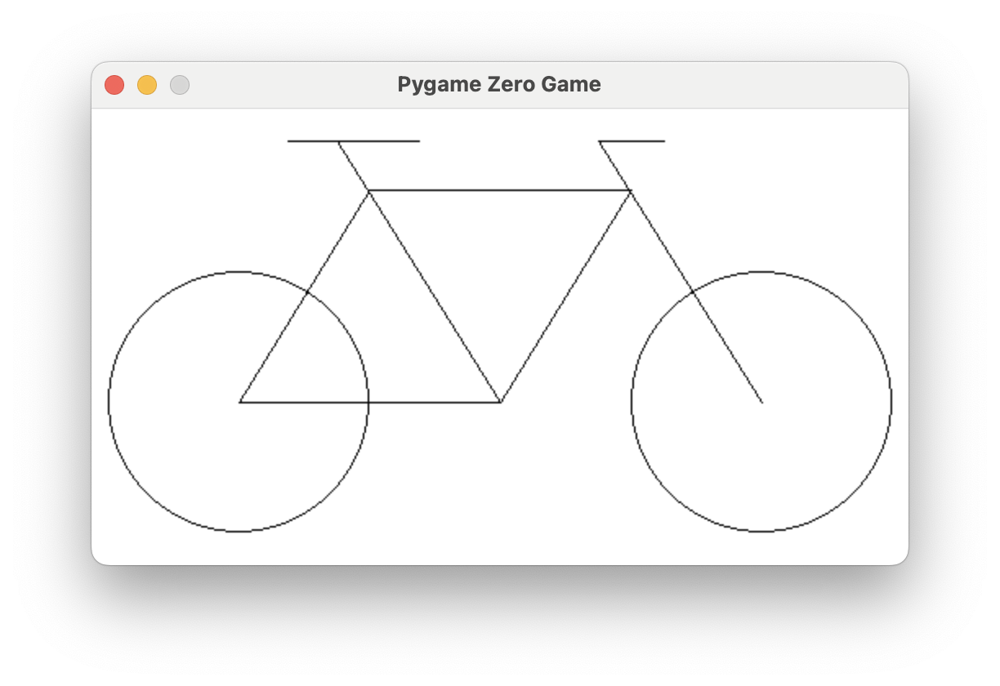
Overview
In this lab you'll open a Pygame Zero window, learn how colors are built from red, green, and blue, and use the drawing functions for lines and circles. Then you'll put it all together to reproduce a bicycle from a set of coordinates.
Builds on: the Python basics you practiced with Meet Reeborg! — setting variables and calling functions.
Before you start
Open your Pygame Zero editor and start a new program named bike.py.
You've got it when…
- A window opens at the size your
WIDTHandHEIGHTset. - You can fill the background with a color, by RGB numbers or by name.
- Your bicycle matches the target — both wheels, the frame, the seat, and the handlebar in the right places.
Collaboration & AI
Work: On your own. Ask a neighbor if you get stuck, but the program you submit should be yours.
AI — AIAS Level 1, No AI: This lab is about learning to place shapes with coordinates yourself, so set AI aside for this one. What the levels mean.
Create a Window
Start with two variables, WIDTH and HEIGHT. Pygame Zero uses these
special variables to set the size of the window.
Try it out. Your screen should look like this.
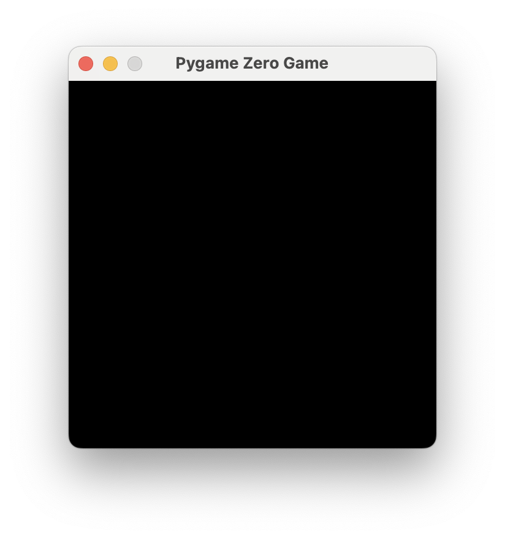
Now make the window larger.
Warning
If your window doesn't change size, check that the variables WIDTH and
HEIGHT are spelled exactly as shown here.
Colors
Mixing Colors
Try this.
Your screen should look like this.
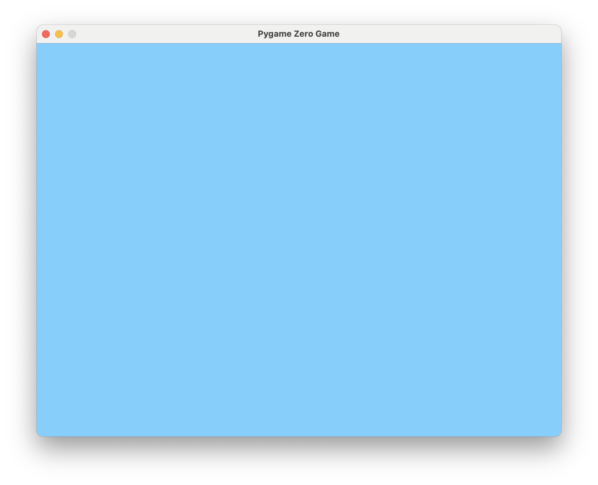
What do the numbers in (135, 206, 250) mean? In computer graphics, a color is
usually three numbers giving a mix of red, green, and blue, or RGB. Each
value runs from 0 to 255 and says how much of that channel to add.
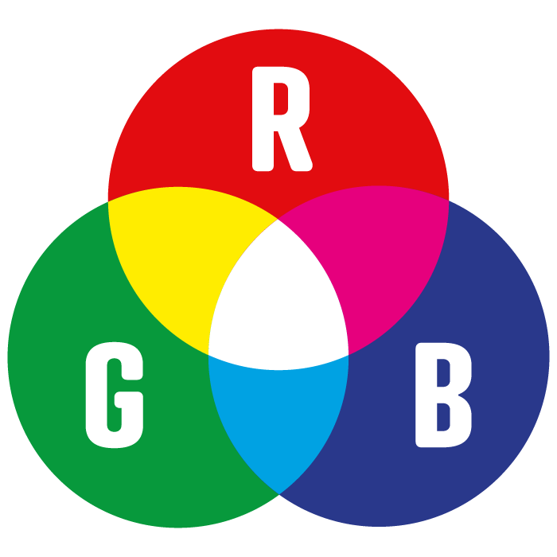
Why 0 to 255?
Remember binary numbers. Each color gets one byte — eight bits — to say
how much to mix. The largest value eight bits can hold is 11111111 in
binary, which is 255 in decimal. That's the ceiling for red, green, and
blue.
Try the color picker here and blend some custom colors.
Named Colors
You can also use names for many colors instead of RGB numbers. Try changing the
BGCOLOR variable like this:
Warning
Notice that the color name "skyblue" is in double quotes. This tells
Python the value is a string — a piece of text.
Drawing
The draw() Function
Everything drawn inside your window happens inside a special function named
draw. We used it above to set the background color with screen.fill().
2D Graphics Coordinates
2D graphics usually put the origin (0, 0) at the upper-left pixel. The
x-axis increases from left to right, and the y-axis increases from top
to bottom.
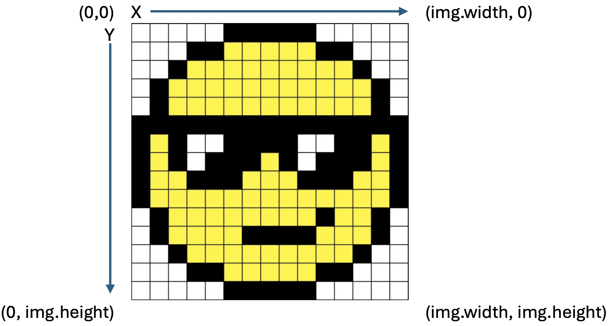
Info
This is different from Scratch, where the origin sits in the center of the screen. In Pygame Zero it's the upper-left corner.
Lines and Circles
Try this.
WIDTH = 800
HEIGHT = 600
def draw():
screen.fill("skyblue")
screen.draw.circle((250, 250), 50, "white")
screen.draw.filled_circle((250, 100), 50, "red")
screen.draw.line((150, 20), (150, 450), "purple")
screen.draw.line((150, 20), (350, 20), "purple")
Notice that x/y coordinates are given inside their own parentheses. These are the functions you'll use to draw:
| Function | What it does | Example |
|---|---|---|
screen.draw.line(start, end, color) |
Draws a line from start to end. start and end are x/y coordinates; color is an RGB tuple or a name. |
screen.draw.line((150, 20), (150, 450), "purple") |
screen.draw.circle(pos, radius, color) |
Draws the outline of a circle centered at pos. radius is half the diameter. |
screen.draw.circle((250, 250), 50, "white") |
screen.draw.filled_circle(pos, radius, color) |
Same as circle, but filled with the color instead of just an outline. |
screen.draw.filled_circle((250, 100), 50, "red") |
Challenge: Draw a Bicycle
Reproduce the bicycle drawing below precisely.
Warning
Read all of the hints and tips below before you begin.
Hints and Tips
-
Here is the bicycle on a grid. Each grid square is 10 x 10. You do not need to draw the grid.
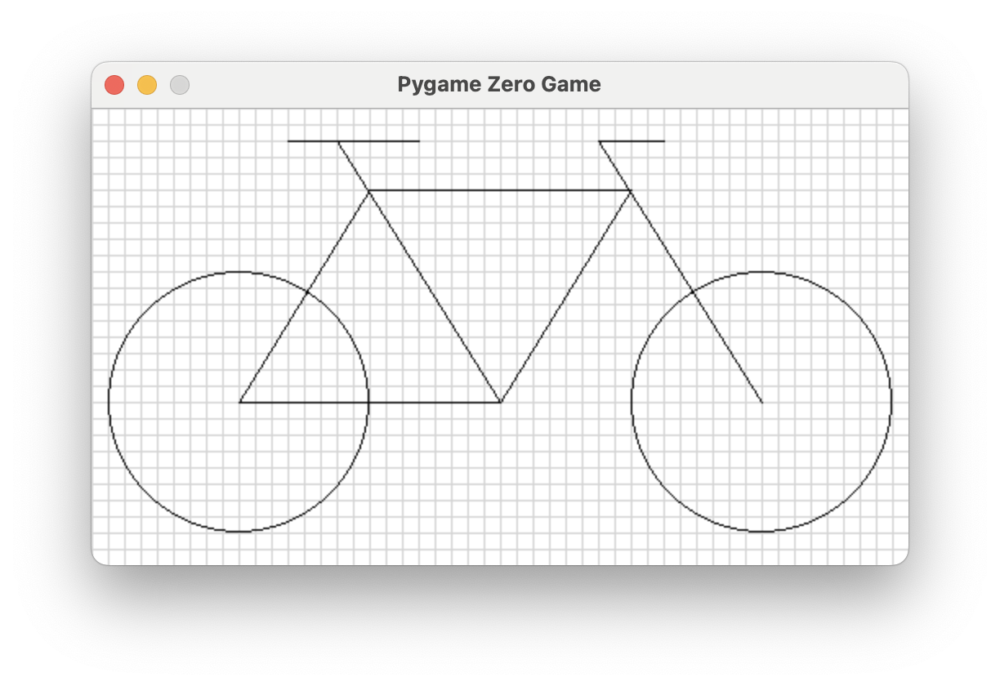
-
The screen is 500 wide and 280 high.
- The rear wheel is centered at
(90, 180); the front wheel at(410, 180). Both wheels have a radius of80. -
The frame (shown in red) connects
(170, 50),(330, 50),(250, 180), and the center of the rear wheel.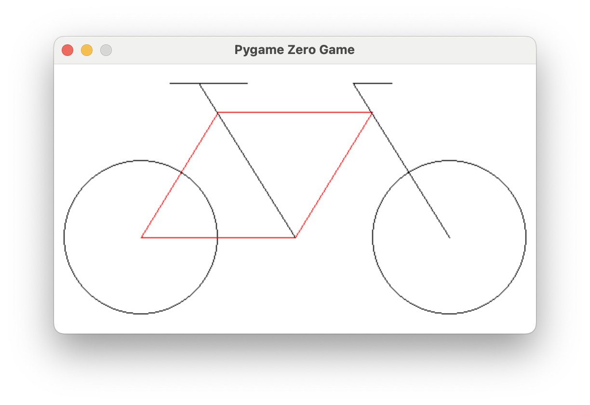
-
The seat tube (in red) connects one of the lower frame points to
(150, 20).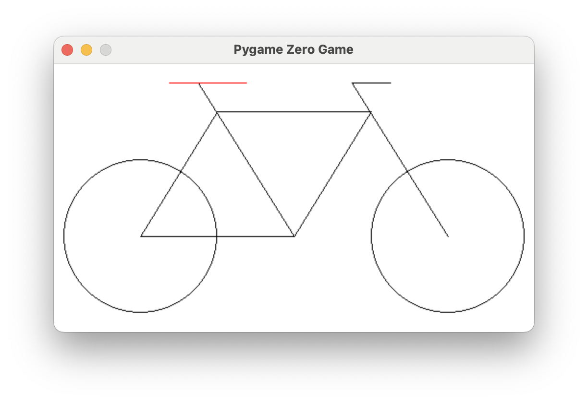
-
The steering tube (in red) connects the center of the front wheel to
(310, 20).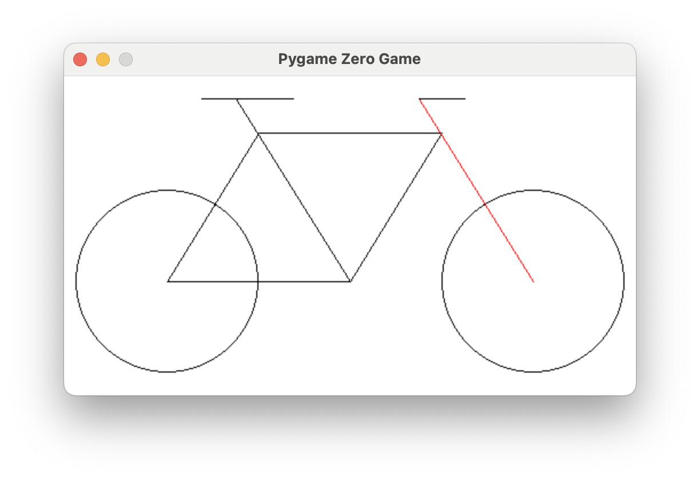
-
The handlebar (in red) is
40long.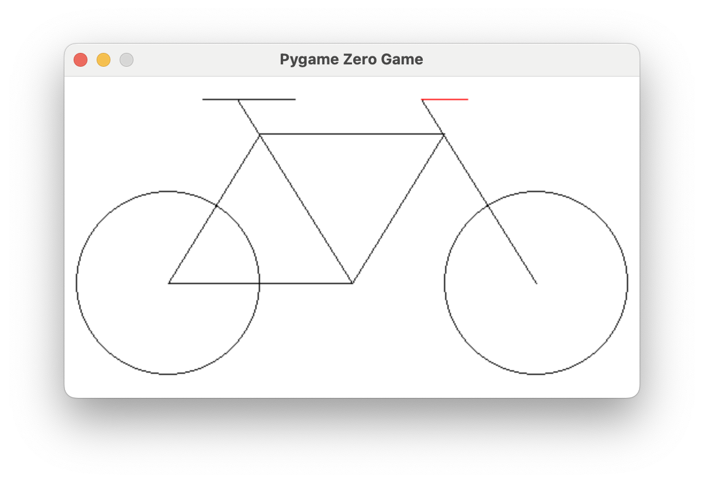
-
The seat (in red) is
80long, with the x-coordinate of its rear end at120.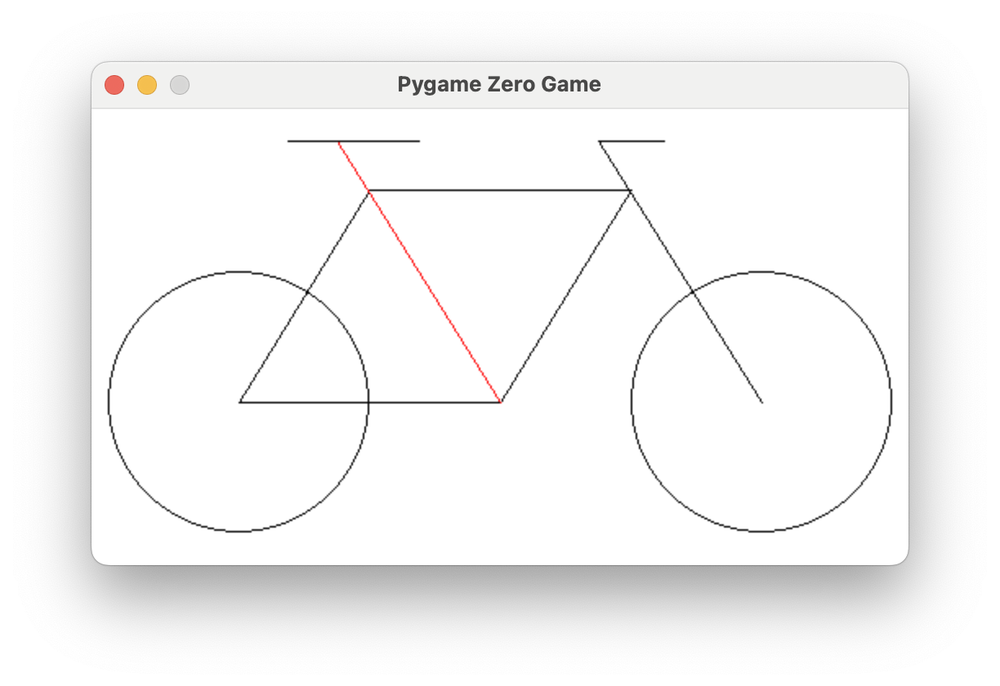
Bonus
Draw a crank and pedal with any design you like. In the example, the crank hides part of the frame behind it but still has a red outline — done with two circles: a white filled circle, then a red outline circle on top of it.
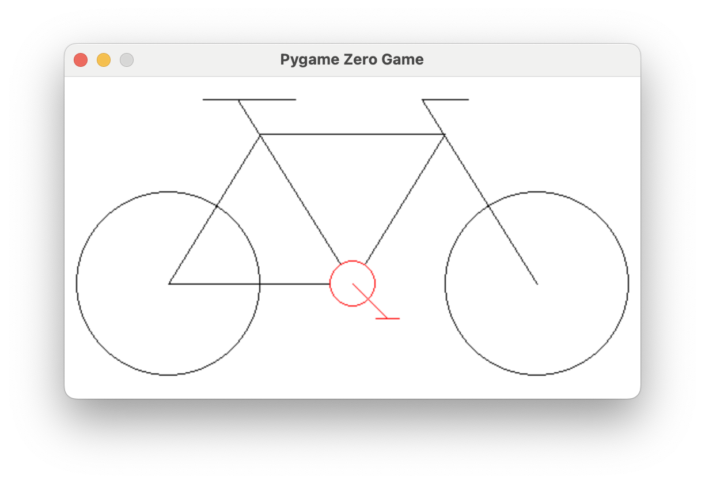
Turn It In
- Submit your
bike.pyfile with your program to draw the bicycle.